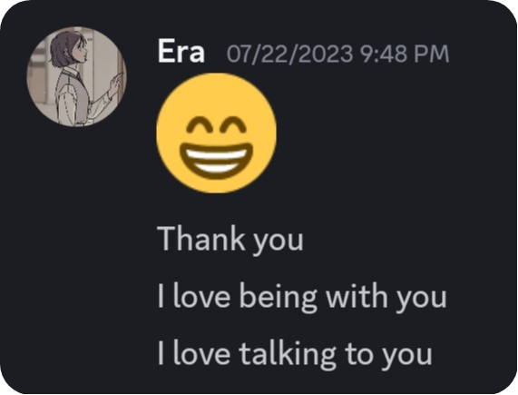
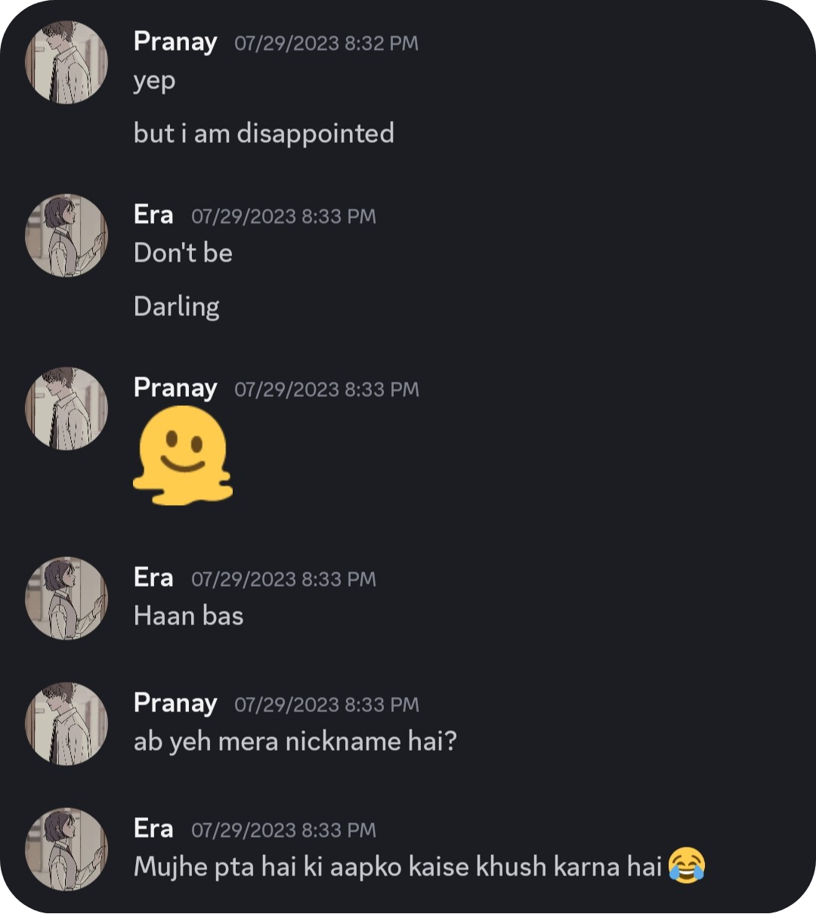
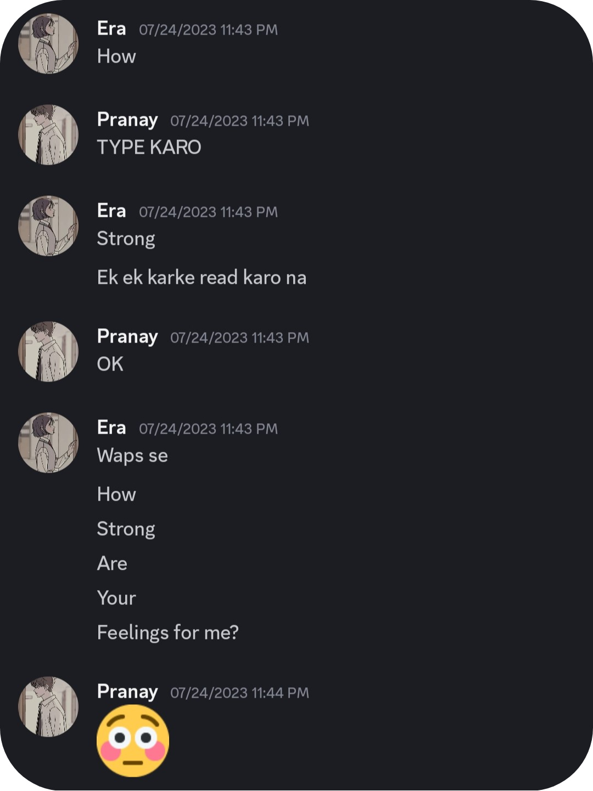
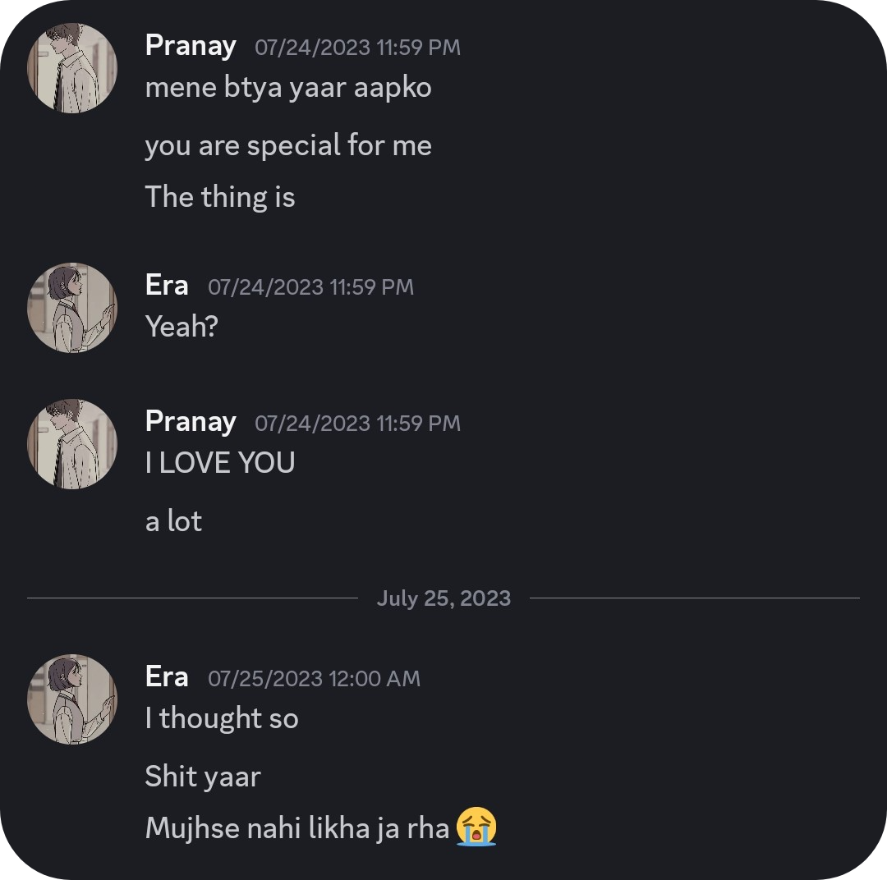
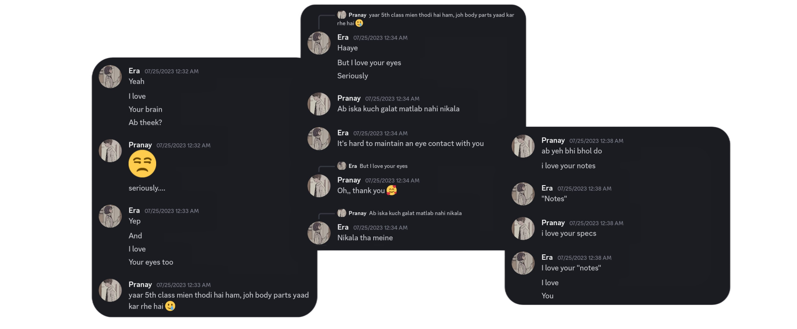

- 21 st July vali baat toh shayad yaad hogi aapko, jabh mein aap aur kanha DC mein baithe the, mein aapke opposite tha, tabh aap table ke neeche se mujhe book le rhe the, tabh aapka hath mujhe touch hogya tha, uff… joh fati thi meri tabh. Ofc kisi galat way mein nahi, bas aachanak se aapke sparsh se mera maan vichlit hogya tha. Yeh toh pakka nahi bhule hoge aap, aur mein bhi nahi bhul sakta kabhi.
- Iss time tak hamari bohot saari batein ho rhi thi, we were getting closer and closer. Ek din ham allen mein kaafi zyada der tak ruke hue the, us din shaam ko ham aise hee batein kar rhe the, tabhi aapka message aaya, “I love being with you, I love taking to you”. Can’t tell you kitni khushi mili thi, us time yeh bilkul expect nahi kiya tha mene. Jabh aapse pucha, tabh aapne yahi kaha ki aaj kaafi der sath time bitaya, isliye.


- Iss josh josh mein mene ek din “Goodnight sweetheart” likha tha, btw which I mean from bottom of my heart, us din toh neend mein aapne dhyan nahi diya par agle din aap iske barein mein puch rhe the, ig aapko itna pasand nahi aaya tha yeh. Par iske kuch dino baad hee aapne yeh message kiya tha, so pta nahi aapko yeh naam pasand aaya tha ya nahi, but I like calling you sweetheart. Aapne bhi din baad mere liye ek naam Rakha tha, beside joh aage jaake aapne itne saare naam rakhe the.
- Iske agla din, 24 th July, it was magical. Kuch kehna tha aapko par keh nahi rhe the, thora idea mujhe bhi lag gya tha, isliye mein bhi baar baar aapse kehne ke liye keh rha tha. I still remember, “How Strong are your feelings for me?”. Abh toh I was so damn sure. You never fail to surprise me, in a good way ofc. Bohot wait kiya tha is moment ka, mujhe bhi kehna tha tabh bas bohot fati thi isliye perfect vale moment ka wait kar rha tha, rather than khud se moment banane ka nahi socha. Aapki yeh baat mujhe bohot pasand hai, jis insaan ko aap itna pasand karte ho, usse baat karne se kyu peeche hatna.


Baton baton mein hee that moment came, Monday 24 th July 2023 11:59 pm, I told you, “I love you”, and got a lovely reply from you lol. Fir 30 min tak body parts sunane ka baad, Tuesday 25 th July 2023 12:38 am, you told me too… pure butterflies. It has become one of my best core memories, which brings me a smile every time I remember it and I believe it brings you a smile too.

- I am an idiot, 26 th July ko hamari pehli baar ladai hogyi thi, jisme totally meri galti thi kuch aise ke diya tha joh nahi kehna chaiye tha, I still regret that. Par isme ek baat aachi thi, aapne mujhe kaha tha ki yeh better hota agar ham pichle saal morning mein milte, baat choti si hai par bohot deep hai mere liye. I am an idiot, bohot pareshaan kiya hai aapko.
- 27 th July ko bhi ham allen mein der tak ruke hue the, us din aap mujhe magnetism ke advance ke pyq karne ko de rhe the, aur har sahi answer pe ek truth ya dare the. Us din ki vibe totally alag thi, I could tell aap chahte the ki mein sahi answer nikalu, kaafi hints de rhe the aap, samaj rha tha mein ki yeh kis direction mein ja rha hai, but I was not sure. Maan mein bas yahi dar tha ki aap comfortable rho bas. 3 options mile the, (btw usme se aapke liye ek dare mera abhi bhi bacha hua hai). Ek time ke liye mene socha bhi tha, fir vohi baat sochke nahi bola. Vaise iss din hamne pehli baar sath mein picture li thi.